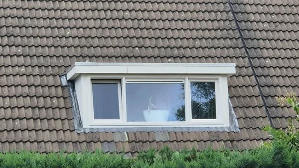
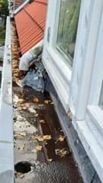

Dakkapel lood vervangen
Een dakkapel de uitbreiding voor uw zolder, maar het loodwerk zorgt bij veroudering weleens voor lekkage. Vervang uw dakkapel lood tijdig, lees alles hier!
- ✓Onze experts staan voor u klaar. Ontvang gratis advies of meer informatie over uw specifieke situatie!
- ✓Heldere inspectie en duidelijke uitleg vooraf
- ✓Snelle opvolging bij lekkage of twijfel

Situaties uit de praktijk
Beelden van dakdetails, slijtage of werkzaamheden die passen bij dit onderwerp.


Wat u moet weten
Een dakkapel is een mooie manier om uw zolder tot een kamer om te toveren. Lees alles over dakkapellen op onze informatiepagina dakkapel . Een dakkapel zorgt echter ook voor een extra, zogeheten bijzondere aansluiting. Deze aansluiting bestaat uit een loodafwerking.
Het is belangrijk om dakkapel lood op tijd te vervangen. Een loodafwerking is altijd aangebracht met een reden, wanneer een loodafwerking in slechte staat is, is het altijd raadzaam deze te vervangen. Het is raadzaam om niet te wachten tot u, lekkageproblemen ervaart. Verderop op deze pagina leest u, hoe u kunt herkennen of uw dakkapel lood aan vervanging toe is. Twijfelt u? Neem direct contact op en laat u adviseren door een expert. Advies is altijd gratis en geheel vrijblijvend, u zit dus nergens aan vast!
Het herkennen van versleten dakkapel lood is niet altijd even makkelijk. Toch zijn er een aantal kenmerken waaraan ook u, kunt zien of uw dakkapel lood aan vervanging toe is. Haarscheurtjes, dit zijn zichtbare dunne, gekartelde lijntjes in het oppervlak van de loodconstructie. Dit is een eerste overduidelijk teken, dat uw lood op korte termijn aan vervanging toe is. Een andere manier, om te zien of uw dakkapel lood aan vervanging toe is, kunt u vaststellen door de dikte van het lood te laten meten. Vanuit de bouw wordt voor dakkapel lood, minimaal 18 ponds bladlood geadviseerd. 18 ponds bladlood heeft een minimale dikte van 1,59 millimeter. Wanneer het lood een dikte van 0,5 millimeter heeft bereikt, beoordelen wij dit als versleten. Ook zijn vanzelfsprekend (grote) scheuren een duidelijke indicator dat uw lood aan vervanging toe is. Maar zelfs wanneer u deze indicatoren niet herkent, kan het zijn dat uw dakkapel lood niet juist is aangebracht.
Om zeker te zijn dat het vervangen van schoorsteenlood nodig is, is het altijd aan te raden de situatie te laten beoordelen door een expert. Kom in contact!
Om dakkapel lood op de juiste wijze te vervangen is het nodig de zijwangen en bekleding aan de voorzijde van de dakkapel te demonteren. Vervolgens kan de oude loodconstructie worden verwijdert.
Kosten dakkapel lood vervangen
De kosten voor het vervangen van dakkapel lood kunnen nogal uiteen lopen. Dit komt omdat het ene type bekleding eenvoudiger is om te demonteren dan het ander type. Bijvoorbeeld trespa, dit is vaak middels schroeven bevestigd en dan ook eenvoudiger te demonteren en terug te plaatsen dan een dakkapel met een afgewerkte houten constructie. Het vervangen van dakkapel lood kan al vanaf €135,- exclusief BTW per meter. Afhankelijk van totale lengte en situering van de dakkapel.
Om een goede indicatie te geven wat de kosten bedragen om het lood van uw dakkapel te vervangen, kunt u het best contact opnemen met een expert. Kom in contact met een expert en ontvang een offerte op maat!
Advies of meer informatie nodig?
Onze experts staan voor u klaar. Ontvang gratis advies of meer informatie over uw specifieke situatie!
Wilt u zekerheid over uw dak?
Laat de situatie beoordelen voordat schade groter wordt. U krijgt helder advies over wat nodig is, wat kan wachten en welke oplossing duurzaam is.